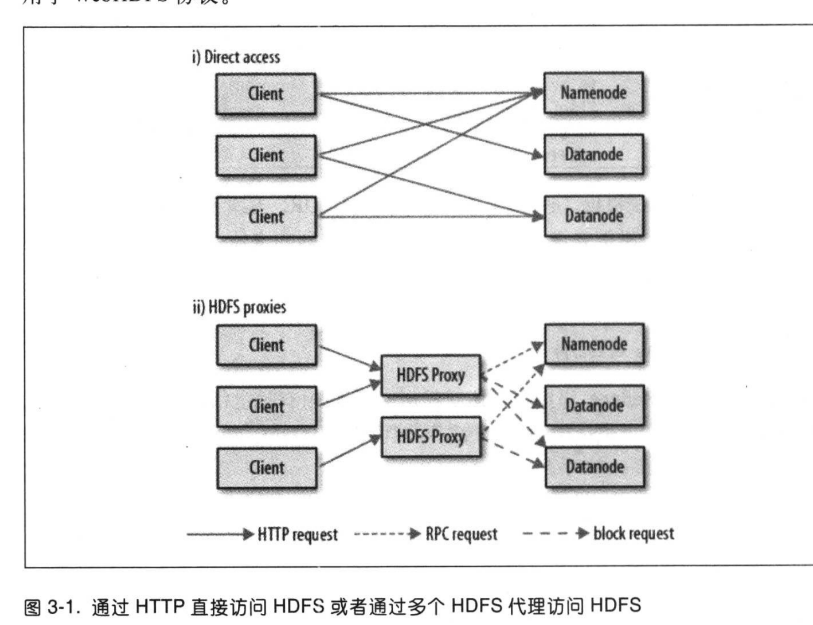

第3章Hadoop分布式文件系统
简介
- 分布式文件系统跨越了本地机器磁盘容量
- 引入网络编程
- 增加副本保证HDFS高可用
HDFS设计
- 超大文件
- 流式数据访问 一次写入多次读取
- 商用硬件 不需要性能高昂的服务器
- 不适合低时间延迟的数据访问 为了高吞吐量而优化的
- 有namenode内存决定HDFS集群大小
- 文件只支持单文件写入 只支持文末写入
HDFS概念
- 数据块
- 特点
- 默认128M 独立的存储单元
- 灵活管理控件 1M文件不会占据128M
- 目的是为了最小化寻址开销 消耗主要在网络传输中
- 优点
- 逻辑上在同一个机器上 现实中物理分割
- 简化文件存储系统设计 只负责存储，由其余节点管理元数据
- 存在副本 容错率高
- 特点
- namenode&datanode
- 概念
- 一个namenode与多个DataNode组成
- 本地文件系统 + HDFS
- HDFS访问权限r w x
- NameNode是超级账户
- namenode
- 概念
- 管理文献系统的命名空间
- 命名空间镜像 + 编辑日志文件
- 不用就保存块的位置信息
- 可以通过联邦HDFS 通过多个NameNode扩展HDFS
- 备份
- 备份文件系统元数据持久状态的文件
- 辅助NameNode 定期合并编辑日志与命名空间镜像
- 概念
- DataNode
- 文件系统的工作节点
- 定期发送存储块的列表
- 会在内存中缓存频繁被访问的块 集群中有且一个节点缓存
- 概念
- 访问HDFS
- JAVA API
- 通过URL访问文件
- 通过FileSystem访问
- HTTP webHDFS提供的REST接口 建议不用来传大文件
- HDFS守护线程直接服务来自HTTP请求
- 通过代理访问 通常情况
- 
- c语言
- 使用java原生接口访问
- libwebhdfs WEBHDFS接口
- NFS
- FUSE
- JAVA API
数据流
剖析文件读取
- HDFS通过RPC调用NameNode
- NameNode返回DataNode地址 从网络拓扑中最近的 当前节点最好
- 返回文件输入流方便读取
- 读取错误或者文件损坏 则切换到副本读取 并通知NameNode
文件的写入
- HDFS对NameNode进行RPC调用，命名空间创建一个文件
- namenode检测是否存在文件，是否有权限
- NameNode创建记录
- 返回文件输出流，客户端写入数据
- 将待写入的数据放入队列 选择并写入一组DataNode
- 通过DataNode的数据管线进行数据传输 1传2 2传3
- 所有副本确认后删除队列中的数据包
写入失败则重新寻找新的DataNode节点 已写入成功的标记，日后删除
hflush 强制刷新到DataNode内存中
hsyn 强制刷新到DataNode磁盘中
一组文件操作DIstcp 使用MapReduce进行操作
- 适合在两个HDFS中传输数据
- 将map节点设置多余集群数量，可以改善负载均衡